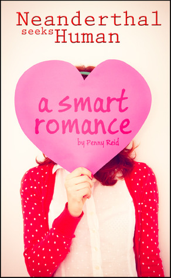
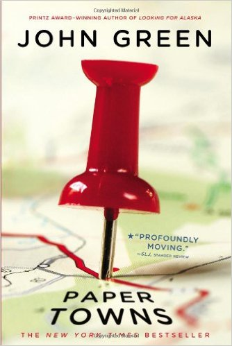
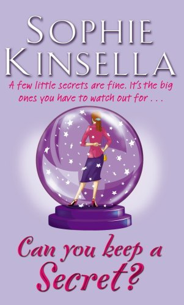

Minerva Dobbs knows that happily-ever-after is a fairy tale, especially with a man who asked her to dinner to win a bet. Even if he is gorgeous and successful Calvin Morrisey. Cal knows commitment is impossible, especially with a woman as cranky as Min Dobbs. Even if she does wear great shoes and keeps him on his toes.
But Fate has other plans, and it's not long before Min and Cal meet again. Soon, they're dealing with a jealous ex-boyfriend, Krispy Kreme donuts, a determined psychologist, chaos theory, a freakishly intelligent cat, Chicken Marsala, and more risky propositions than either of them ever dreamed of. Including the biggest gamble of all—true love.

There are three things you need to know about Janie Morris: 1) She is incapable of engaging in a conversation without volunteering TMTI (Too Much Trivial Information), especially when she is unnerved, 2) No one unnerves her more than Quinn Sullivan, and 3) She doesn't know how to knit.
After losing her boyfriend, apartment, and job in the same day, Janie Morris can't help wondering what new torment fate has in store. To her utter mortification, Quinn Sullivan- aka Sir McHotpants- witnesses it all then keeps turning up like a pair of shoes you lust after but can't afford. The last thing she expects is for Quinn, the focus of her slightly, albeit harmless, stalkerish tendencies, to make her an offer she can't refuse.

Quentin Jacobsen has spent a lifetime loving the magnificently adventurous Margo Roth Spiegelman from afar. So when she cracks open a window and climbs into his life—dressed like a ninja and summoning him for an ingenious campaign of revenge—he follows. After their all-nighter ends, and a new day breaks, Q arrives at school to discover that Margo, always an enigma, has now become a mystery. But Q soon learns that there are clues, and they're for him. Urged down a disconnected path, the closer he gets, the less Q sees the girl he thought he knew...

Meet Emma Corrigan, a young woman with a huge heart, an irrepressible spirit, and a few little secrets: Secrets from her boyfriend: I've always thought Connor looks a bit like Ken. As in Barbie and Ken. Secrets from her mother: I lost my virginity in the spare bedroom with Danny Nussbaum while Mum and Dad were downstairs watching Ben-Hur. Secrets she wouldn't share with anyone in the world: I have no idea what NATO stands for. Or even what it is. Until she spills them all to a handsome stranger on a plane. At least, she thought he was a stranger.…Until Emma comes face-to-face with Jack Harper, the company's elusive CEO, a man who knows every single humiliating detail about her...